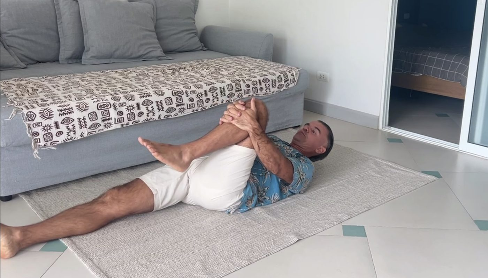
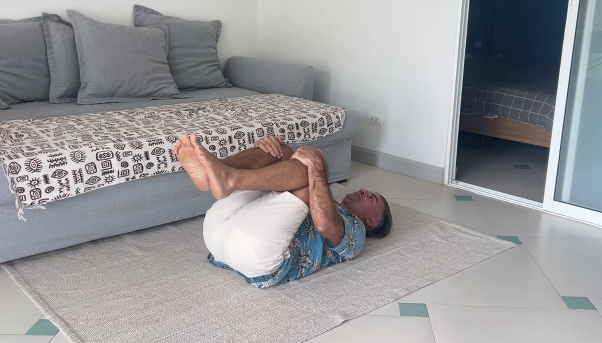
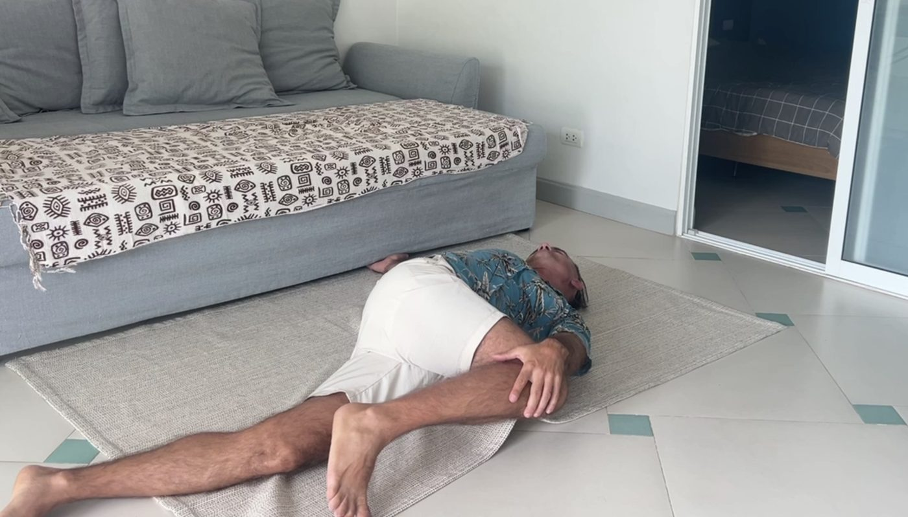
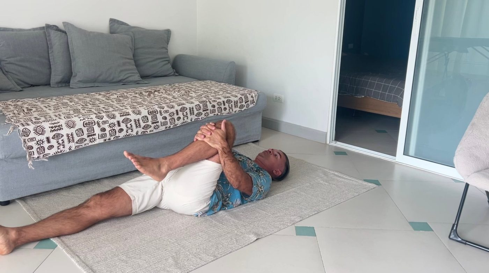

Эта статья и видео для вас, если:
- вы встаёте утром в несколько приёмов: сначала на бок, потом сесть, потом медленно разогнуться;
- к вечеру поясницу тянет так, что хочется лечь на пол;
- надеть носки или поднять сумку каждый раз маленький риск;
- массаж помогает максимум на пару дней.
Сначала я дам упражнения, после которых станет легче уже сегодня. А потом объясню то, чего обычно не объясняют: почему боль всё равно возвращается и где на самом деле её причина.
В конце будет простая проверка. По ней вы сами поймёте, где у вас причина: в пояснице или совсем в другом месте.
Почему боль, которая возвращается, это не «просто спина»
Почти все, кто приходит ко мне с поясницей, уже прошли один и тот же путь.
- Сначала массаж, потому что кажется, что мышца «забилась».
- Потом мази, растирки, иглы.
- Потом невролог, таблетки и уколы. Параллельно МРТ.
- Потом мануальщик.
Кто-то пробует накачать спину в зале, кто-то старается разгрузить себя на работе.
Каждый раз становится легче, и каждый раз ненадолго. Неделя, две, месяц. А потом всё возвращается.
Между обострениями человек забывает о проблеме. Привыкает «расхаживаться» по утрам и не думать об этом. А потом поясницу снова простреливает от мелочи: наклонился за сумкой, позанимался в зале, неудачно повернулся во сне. И приходится отменять дела, потому что утром невозможно встать.
Постепенно жизнь подстраивается под спину. Человек бросает зал, бег или йогу, потому что боится нового обострения. Просыпается ночью, когда переворачивается, и не может найти удобную позу. Носит обезболивающее в сумке «на всякий случай». Боится поднимать ребёнка.
И главное, с каждым новым кругом становится всё меньше веры, что это вообще можно решить. Человек начинает думать, что это возраст, что так у всех, что с этим придётся жить. А если боль начала отдавать в ногу или на МРТ нашли грыжу, появляется мысль про операцию.
Я разбираю такие случаи постоянно, и картина почти всегда складывается по одной схеме. Сейчас покажу её по шагам.
Вы всё делали правильно, просто не в том месте
Когда болит поясница, логика у всех одна: проблема в пояснице. И все привычные способы бьют именно туда. Давайте пройдём по ним, и вы, скорее всего, узнаете свой путь.
«Мышца забилась, надо размять». Человек идёт на массаж, иногда специально выбирает массаж посильнее, чтобы «как следует промяли». После него действительно легче, на два-три дня. А бывает и наоборот: после сильного массажа на следующий день невозможно встать от острой стреляющей боли.
«Спина слабая, надо накачать корсет». Человек идёт в зал качать спину и пресс. У кого-то становится чуть лучше, а у многих поясницу после тренировки заклинивает ещё сильнее, и зал приходится бросить.
«Помажу, выпью таблетку, поставлю укол, и само пройдёт». Острую боль это снимает. Но через какое-то время всё возвращается, и человек начинает думать, что это теперь навсегда.
«На МРТ грыжа, значит, болит из-за неё». Снимок есть, диагноз есть, страх есть. А почему болит именно сейчас и что с этим делать, так никто толком и не объяснил.
Звучит разумно, и какой-то эффект действительно есть. Но боль каждый раз возвращается, причём в ту же самую точку.
Дело не в том, что вам попадались плохие массажисты или вы мало занимались.
Массаж, упражнения, мази и уколы работают с местом, где болит. А причина боли очень часто находится в другом месте.
Каждый специалист смотрит со своей стороны:
- невролог через таблетки;
- массажист через мышцы;
- мануальщик через позвонки.
А целиком на человека не смотрит никто.
Почему поясница на самом деле болит
В большинстве случаев, которые я вижу, поясница болит не потому, что она слабая или «забилась». Она перегружена. Она работает за мышцы, которые должны ей помогать, но отключились.
Поясница не держит тело в одиночку. Снизу её подпирает тазовое дно, сбоку и сзади таз стабилизируют ягодицы, спереди помогают мышцы живота. Когда все они работают, нагрузка распределяется, и поясница спокойно выдерживает и сидение за компьютером, и тренировку, и ребёнка на руках.
Проблемы начинаются, когда кто-то из помощников выключается. Объясню на примере, который встречаю очень часто.
Теперь понятно, почему ничего из привычного не помогает надолго.
С мышечным корсетом
Корсет у таких людей обычно не слабый, а выключенный.
Качать выключенную мышцу бесполезно: сначала её нужно включить. Поэтому после зала многим и становится хуже: вся новая нагрузка ложится на ту же перегруженную поясницу.
С простреливанием от мелочи
Поясница работала за всех месяцами, а иногда годами. Напряжение копилось, и в какой-то момент хватило одного наклона или одной тренировки.
Мелочь была не причиной, а последней каплей.
С грыжей на МРТ
Снимок показывает, как выглядит позвоночник, но не показывает, почему мышцы вокруг него перегружены и почему боль появилась именно сейчас.
Грыжа часто оказывается следствием той же перегрузки, а не её началом.
Помощников выключает не только орган. Очень часто это стопа: если сместились кости стопы, человек начинает чуть иначе ставить ногу, иногда даже прихрамывать, и нагрузка снова уходит в поясницу.
Бывает, что причина в старой травме, в спайке после операции или воспаления.
У каждого своя комбинация, но механизм один: поясница работает за тех, кто выключился.
Поясница это место, где болит, а не место, где возникла проблема. Поэтому в своей работе я начинаю совсем с других частей тела, а поясницей занимаюсь в последнюю очередь.
Три упражнения и вытяжение, чтобы стало легче уже сегодня
Пока причина не найдена, перегруженной пояснице нужна разгрузка. Эти упражнения снимают напряжение с поясницы и мягко мобилизуют позвонки, то есть помогают им встать на место.
Комплекс простой и безопасный. Его можно делать в любых условиях, в том числе когда поясница болит остро или просто устала к вечеру.
Нужен коврик на полу или кровать с жёстким матрасом. Одежда, в которой удобно подтягивать колени к груди. Делайте всё медленно, без рывков, и следите за дыханием: оно в этом комплексе важнее силы.
Если какое-то движение вызывает резкую боль, остановитесь. Тянуть и сопротивляться нужно до ощущения напряжения, а не боли.

Нога к животу с сопротивлением
- Лягте на спину. Одну ногу вытяните, вторую согните, обхватите руками и подтяните к животу.
- Подержите так 20-30 секунд. Вы почувствуете лёгкое растяжение в пояснице и в ягодице согнутой ноги.
- Сделайте вдох и задержите дыхание. Начните толкать колено от себя, в руки, а руками его не отпускайте. Нога давит, руки держат, положение не меняется. Толкайте 7-8 секунд.
- Выдохните. На выдохе расслабьте ногу и подтяните её к животу чуть ближе, чем было.
- Пауза 2-3 секунды, и снова вдох, задержка, сопротивление.
Сделайте 8-10 раз на левую ногу, затем 8-10 раз на правую. Упражнение можно делать самостоятельно или с помощником, который мягко придерживает колено.
Почему это работает. После короткого усилия мышца расслабляется глубже, чем при обычной растяжке. Поэтому с каждым повтором нога подтягивается к животу чуть ближе, а поясница отпускает.
На что обратить внимание. Если с одной стороны нога подтягивается заметно хуже или напряжение сильнее, запомните это. Разница между сторонами пригодится в проверке в конце статьи.

Обе ноги к груди с сопротивлением
- Лёжа на спине, обхватите руками обе согнутые ноги и подтяните их к груди.
- Подержите, чувствуя растяжение в пояснице.
- Вдох, задержка дыхания. Давите ногами от себя, в руки, около 7 секунд. Руки держат, ноги давят.
- На выдохе расслабьтесь и подтяните ноги к груди ещё немного.
- Короткая пауза, и снова.
Сделайте от 5 до 10 повторов.
Это упражнение работает на обе стороны поясницы сразу и хорошо продолжает первое. Есть варианты выполнения с полотенцем, их я обычно показываю на персональных занятиях или после сеанса.

Скрутка лёжа на спине
- Лёжа на спине, одну ногу оставьте прямой, вторую согните в колене.
- Сделайте вдох. На выдохе рукой мягко отведите согнутое колено через прямую ногу к полу. Например, если согнута правая нога, левой рукой ведёте правое колено влево.
- Вторую руку положите на пол в сторону, а голову поверните к ней. Получается лёгкая скрутка.
- В этом положении спокойно, медленно и глубоко дышите. Оставайтесь в скрутке, пока не почувствуете, что поясница полностью расслабилась.
- Вернитесь на спину, выпрямите ноги и сделайте то же самое в другую сторону.
Если в скрутке больно или неприятно, подложите под колено валик или свёрнутое полотенце. Если, наоборот, легко, можно постепенно разгибать согнутую ногу, это более сложный вариант.
Здесь не нужно дотягиваться коленом до пола любой ценой. Задача не в глубине скрутки, а в том, чтобы поясница отпустила.

Финал: вытяжение всего позвоночника
После трёх упражнений я всегда рекомендую сделать вытяжение. Оно хорошо расслабляет и вытягивает весь позвоночник целиком.
- Лёжа на спине, потяните носки стоп на себя, а пятками тянитесь от тазобедренных суставов.
- Подбородок прижмите к груди, макушкой тянитесь вверх. Сделайте вдох.
- Делайте небольшие медленные короткие движения: потянитесь по очереди правой и левой ногой, правой и левой рукой.
- Если в каком-то движении почувствовали скованность или напряжение в пояснице, остановитесь в этом положении, продышите его и только потом продолжайте.
- Затем потянитесь руками и ногами одновременно в противоположные стороны и спокойно подышите.
Особое внимание уделите тому положению, в котором чувствуете скованность. Именно там поясница держит больше всего напряжения.
После этого расслабьтесь и полежите 5 минут. Почувствуйте, как ощущается позвоночник, участок за участком. Не вскакивайте сразу.
Как правильно вставать
То, как вы встанете после комплекса, тоже важно. Если резко сесть из положения лёжа, можно снова перегрузить поясницу и потерять часть эффекта.
- Согните ноги.
- Повернитесь на бок.
- Оттолкнитесь руками и встаньте на колени.
- Потянитесь.
- Только после этого выпрямитесь и встаньте.
Так же стоит вставать и каждое утро с кровати, особенно если поясница по утрам скована.
Если немеет нога или стопа, появилась слабость в ноге, нарушилось мочеиспускание, или боль резко усиливается во время упражнений, не ждите. Сначала нужно показаться специалисту.
Почему эти упражнения не уберут боль насовсем
Упражнения снимают перегрузку с поясницы, и уже после первого раза становится заметно легче. Но они не включают обратно тазовое дно и ягодицу и не убирают то, что их выключило.
Если причина в кишечнике, в пережатом нерве, в стопе или в старой травме, через несколько дней поясница снова останется одна, и напряжение вернётся. Комплекс можно делать снова, и он снова поможет.
Упражнения это помощь, пока вы ищете причину.
Но если вы хотите действительно убрать причину, лучше прийти на диагностику. Там я найду, что именно выключило мышцы-помощники, и мы разберёмся, как включить их обратно.
Как это выглядит на практике
Две истории из моей практики. В обеих болела поясница, и в обеих причина была не в ней.
Первая история: падение с вейкборда
- 🩺 С чем пришла
Ко мне пришла девушка, которая сильно упала, катаясь на вейкборде. После падения у неё сместились кости стопы, и она начала хромать.
А на следующий день развилась резкая, острая боль в пояснице, на 10 из 10. Боль не снималась ничем, даже самыми сильными обезболивающими. Пришла ко мне в очень разобранном состоянии.
- 🛠 Что сделали
По тестам я увидел, что главная проблема в стопе. Поставил кости на место.
- ✅ Что изменилось
Прямо на глазах ушло около 80% боли. С остальными нарушениями мы работали дальше.
Вторая история: боль после родов
- 🩺 С чем пришла
Женщина после родов. Поясница у неё и раньше иногда побаливала, а после родов стала болеть постоянно.
Ничего не помогало, даже лекарства. Она не понимала, что с этим делать.
- 🛠 Что сделали
Причина оказалась в тазовом дне: оно отключилось, потому что были пережаты нервы. Я работал с кишечником, освобождал нервы и органы таза.
- ✅ Что изменилось
Мышцы включились, в том числе прямая мышца живота, тот самый корсет. После первого сеанса боль в пояснице ушла.
В обоих случаях с самой поясницей я почти ничего не делал. Работа шла там, где возникла проблема.
Проверьте у себя прямо сейчас
До комплекса
Перед тем как сделать комплекс, оцените боль в пояснице от 0 до 10, где 0 это нет боли, а 10 это невыносимо. Запишите цифру.
После комплекса
Сделайте упражнения и вытяжение, полежите 5 минут и снова оцените боль. Большинство замечает разницу уже после первого раза.
Следующие 3-4 дня
А теперь главное: понаблюдайте за собой следующие 3-4 дня. Если боль вернулась примерно к той же цифре, это признак, что причина не в самой пояснице.
Есть и другие признаки, что поясница работает за кого-то ещё. Отметьте, что из этого есть у вас:
- Боль возвращается после массажа и упражнений, хотя сразу после них легче.
- Боль то отдаёт в одну ногу, то в другую, то проходит.
- Поясница начала болеть после падения, травмы, операции или родов, даже если это было давно.
- Вы прихрамываете или после старой травмы по-другому ставите одну ногу.
- В первом упражнении одна сторона заметно туже, чем другая.
- Кроме боли, есть ощущение постоянной слабости и разбитости в теле.
- После зала и «укрепления корсета» становилось хуже, а не лучше.
Если отметили два пункта и больше, скорее всего, причина вашей боли не в пояснице. Мышцы, которые должны ей помогать, выключены, и упражнения здесь снимают только последствия.
Что именно их выключило, по ощущениям не определить. У одного человека это стопа, у другого кишечник, у третьего старая травма, а у кого-то несколько причин сразу. Для этого нужна диагностика.
Если хотите найти свою причину
Если вы узнали себя в этой статье и не хотите ещё год ходить по кругу «массаж, облегчение, боль», напишите мне.
Приглашаю на бесплатную диагностику: найдём первопричину вашей боли и покажем, как её убрать
Без МРТ, без анализов и без гаданий. За 90 минут я нахожу, откуда на самом деле идёт ваша боль, и показываю, что с ней делать. Вот как это проходит.
- Я подробно записываю, где, как и когда у вас болит, куда отдаёт и что вы уже пробовали.
- Смотрю осанку, симметрию и баланс тела.
- Через мышечное тестирование нахожу, какие мышцы выключены и что именно их выключило.
- Уточняющими тестами определяю первопричину, то самое главное звено, с которого всё началось.
- Составляю пошаговый план восстановления: что делать, в каком порядке и с какими методами.
После диагностики вы получаете документ с аудитом вашего состояния и планом. Его можно перечитать, показать близким и вернуться к нему в любой момент. Вы впервые будете понимать, что с вами происходит и почему раньше ничего не помогало надолго.
Диагностику можно пройти очно или онлайн.
Это не лечение вслепую. Сначала мы просто разбираемся, откуда на самом деле идёт ваша боль.
Если решите остаться на сеанс, эффект почувствуете уже после первого. Так происходит примерно у 9 из 10 моих пациентов, и я фиксирую результат тестами до и после, а не обещаю на словах.
Написать мне в личку Напишите «ДИАГНОСТИКА», и я подберу удобное время.И подписывайтесь на мой Telegram-канал
Там я разбираю другие причины, по которым спина и шея болят не там, где проблема, и делюсь упражнениями, которые можно делать дома.
Подписаться на канал